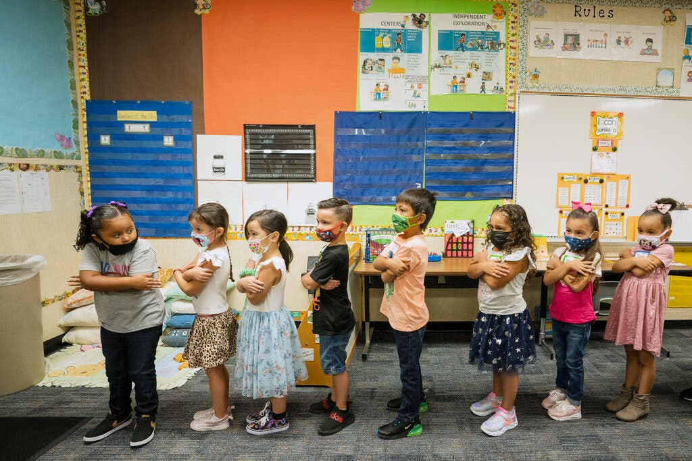
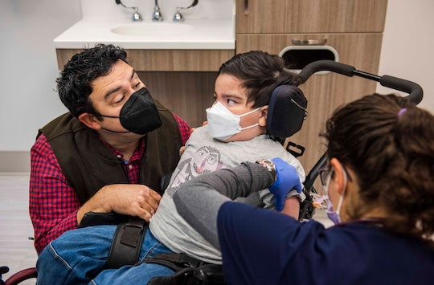
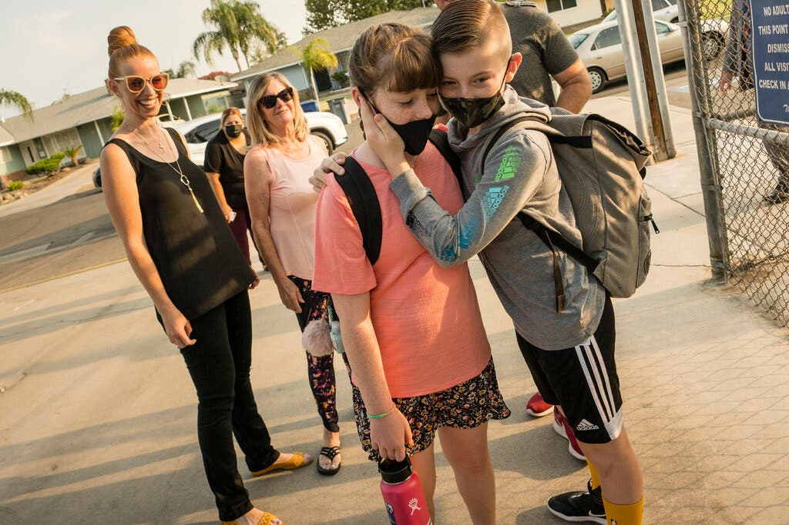
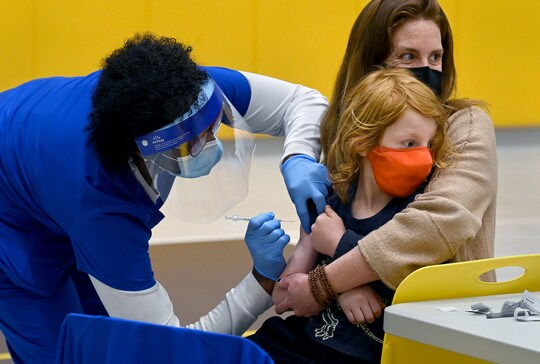

WASHINGTON — The Food and Drug Administration on Friday authorized Pfizer-BioNTech’s coronavirus vaccine for emergency use in children 5 to 11, a move eagerly anticipated by millions of families looking to protect some of the only remaining Americans left out of the vaccination campaign.
About 28 million children in the group will be eligible to receive one-third of the adult dose, with two injections three weeks apart. If the Centers for Disease Control and Prevention signs off, as is expected, they could start getting shots as early as Wednesday.
The Biden administration has promised that children’s shots will be easily accessible at pediatrician offices, community health centers, children’s hospitals and pharmacies, with 15 million doses ready to ship immediately. States started ordering doses last week, under a formula based on how many children they have in the age group. While the school year is already well underway, the pediatric dose is arriving in time for the holidays, giving more comfort to families looking to gather older and younger people together for the first time since the early months of 2020.
An elementary school class in Fresno, Calif.(Tomas Ovalle for The New York Times)
“It’s an incredibly important tool in the return to normalcy,” said Dr. Larry Corey, a virologist at the Fred Hutchinson Cancer Research Center and a leader of the Covid-19 Prevention Network. “To be able to know that your child is protected and not going to get severely ill by going to school is an incredible psychological relief.”
In a clinical trial, the vaccine was shown to generate significant protection in children against the virus. But whether it will help substantially to curb the pandemic is unclear. As of this week, 8,300 children ages 5 to 11 have been hospitalized with Covid-19 and at least 170 have died, out of more than 3.2 million hospitalizations and 740,000 deaths overall, according to the C.D.C.
The biggest determinant of how much more sickness and death lies ahead is whether the more than 60 million adolescents and adults who are already eligible for shots get vaccinated, said Dr. Jennifer Nuzzo, an epidemiologist at Johns Hopkins Coronavirus Resource Center.
While children face a much lower risk of severe outcomes from Covid, Dr. Janet Woodcock, the F.D.A.’s acting commissioner, said at a news conference on Friday that they should be vaccinated to protect against possible long-lasting Covid symptoms, Multisystem Inflammatory Syndrome and hospitalization. She called the rates of hospitalization and death among 5- to 11-year-olds “really startling.”
Some vaccine experts warn that the same inequities that plagued the vaccine rollout for adults this year could hinder the one for children.
“We cannot see what we saw in the earliest stages of rolling out the vaccines for adults, in which advantaged persons and persons of means figure out a way to be first in line,” said Dr. James E.K. Hildreth, the president of Meharry Medical College, a historically Black institution.
He said that school nurses, churches and local health officials would be key in reaching some children and families who might not have insurance or access to pediatricians. The vaccinations are free to everyone.
While the pandemic has generally hit people of color hardest, the racial disparities are especially stark among children.Black and Hispanic children are less likely to be tested for the virus but more likely to be infected, get hospitalized and die from Covid-19 than white children, according to the Kaiser Family Foundation. Hospitalization rates in the 5 to 11 age group are three times as high for Black, Hispanic and Native American children as for white children, according to the C.D.C.
In the 5-11 age group, more than half are children of color and nearly four in 10 come from households with incomes below 200 percent of the federal poverty level, according to Kaiser.
Dr. Hildreth criticized Pfizer for including few minority participants in its clinical trial for 5- to 11-year-olds, saying that it could harm the confidence parents might have in the shot.
Dr. Peter Marks, who oversees the F.D.A.’s vaccine division, said on Friday that regulators did not expect immune responses to vary between children of different ethnic or racial backgrounds, but he added that pharmaceutical companies should strive for more diverse trial enrollment.
At Children’s National Hospital in Washington, officials have devised a plan to make sure families and children at greater risk have immediate access to shots, said Dr. Lee Ann Savio Beers, the hospital’s medical director for community health and advocacy and the president of the American Academy of Pediatrics.
Nicola Brodie administers a coronavirus vaccine to Daniel DeBatt, 6, as his father, Christopher DeBatt, watches at Children's National Shepherd Park on Wednesday in D.C. The Centers for Disease Control and Prevention signed off Tuesday night on giving the Pfizer-BioNTech shots to kids ages 5 to 11. (Amanda Voisard/for The Washington Post)
The hospital plans to notify its most at-risk patients, based on medical diagnosis and the neighborhood where they reside, about the shots by directly contacting parents, she said.
A survey from the Kaiser Family Foundation released on Thursday found 27 percent of parents of 5- to 11-year-olds were eager to vaccinate their children right away, while a third said they would wait and see how the vaccine rollout went. The uptake among adolescents has been slower than public health experts hoped: Pfizer’s vaccine became available to children 12 to 15 in May, but fewer than half in that age group are now fully vaccinated, compared with 69 percent of adults.
Chris Cox, senior vice president for pharmacy business at CVS, said that thousands of his store’s locations would have doses by the end of next week, including some chosen based on a C.D.C. index of “social vulnerability” that identifies where at-risk patients live. Roughly five million doses are set to be delivered as part of the federal pharmacy program in the initial rollout. “There should be plenty of product out even within the first week to meet that initial demand,” Mr. Cox said.
State and local health officials are girding not just for more vaccine hesitancy, but for possible fights over vaccine mandates in schools. California’s governor already issued the nation’s first statewide mandate for schoolchildren, saying the shots would be required as soon as next fall. The City Council in Washington is also considering a requirement.
“I think the contention we have seen over the mask issue is likely to pale in comparison to what we’re going to see over the idea of a vaccine mandate” for schoolchildren, Dr. Jessica Snowden, chief of the infectious disease division at Arkansas Children’s Hospital, said. At a meeting this week of the F.D.A.’s expert advisory panel on vaccines, several members came out strongly against school vaccine mandates.
A C.D.C. study suggests that 42 percent of children aged 5 to 11 have coronavirus antibodies from prior infection, prompting some F.D.A. advisers to ask if one dose would be sufficient for children. Use of that study has been questioned by some scientists. F.D.A. panelists also asked whether only those with high-risk medical conditions, such as obesity, should get the vaccine, since it is clear they are most vulnerable to getting very ill with Covid-19.
But C.D.C. officials said it would be hard to narrow eligibility, and the F.D.A.’s advisory panel endorsed offering the pediatric dose to the entire age group by a 17-0 vote, with one abstention. Dr. Marks, the F.D.A. regulator, said on Friday that data on vaccinating children younger than 5, which Pfizer and Moderna are currently studying, were a “few more months off.”
Siblings hugged as they entered Norseman Elementary school in Fresno, Calif., on the first day of class last week.(Tomas Ovalle for The New York Times)
“The benefit-risk gets to be even more of a careful consideration, because the youngest children are affected the least directly in terms of severe Covid-19,” he said. Dr. Snowden said the Delta variant wiped out any notion that children are impervious to the virus. At the height of the most recent surge, she said, the Arkansas Children’s Hospital was treating as many as 30 children a day for Covid, including some with fully vaccinated parents. While that number has shrunk, “it is still not back to where we were before Delta,” she said.
Much of the burden of the rollout of children’s shots is expected to fall on pediatricians and family physicians, many of whom are strained by staffing shortages and pent-up demand for care at this point in the pandemic but have deep relationships with parents and children. Dr. Sterling Ransone, the president of the American Academy of Family Physicians and a physician in rural Deltaville, Va., said that he would keep his office open later on weekdays and on Saturdays to accommodate demand for pediatric shots.
“We know who to prioritize — asthmatics, those with heart disease, people who are obese,” he said.
Dr. Victor Peralta, a pediatrician in the racially diverse neighborhood of Jackson Heights, Queens, said uptake might be a bit slower at first among his patients, most of whom are poor enough to have Medicaid coverage. But he predicted the pediatric dose would catch on and ultimately help slow transmission of the virus. “I have no doubt that this will make a difference beyond just the worried well,” he said.
Dr. Kathryn M. Edwards, a professor of pediatrics at Vanderbilt University School of Medicine, said pediatricians would help public health officials monitor side effects, such as myocarditis, or inflammation of the heart muscle. Regulators have been carefully watching the higher incidence of that condition in young males who are vaccinated.
“Doctors and pediatricians know myocarditis,” Dr. Edwards said. “We give a lot of vaccines, and know how to report adverse events.”
Another challenge will be ensuring that parents have time and transportation to get their children to vaccine providers. Dr. Beers said that the pediatric academy was already consulting with business groups about giving employees, especially those on hourly schedules, paid time off so they do not lose income taking their children to get a shot.
Nurse Angela Burton give a coronavirus vaccine to August Emmett Stewart, 5, as he is being held by his mother Susanna Emmett at Bancroft Elementary School. (Michael S. Williamson/The Washington Post)
In Vermont, which has one of the highest adult vaccination rates in the country, health officials may “barnstorm” rural and more isolated regions of the state that had lower uptake of shots in earlier stages of the vaccination campaign, hoping to get 80 percent of children between 5 and 11 vaccinated, said Kelly Dougherty, the state’s deputy health commissioner. Pediatric vaccines will be incorporated at community sites already doing first and second doses and booster shots, she said. Vaccinations at school-based clinics are set to begin in the state in the second week of November.